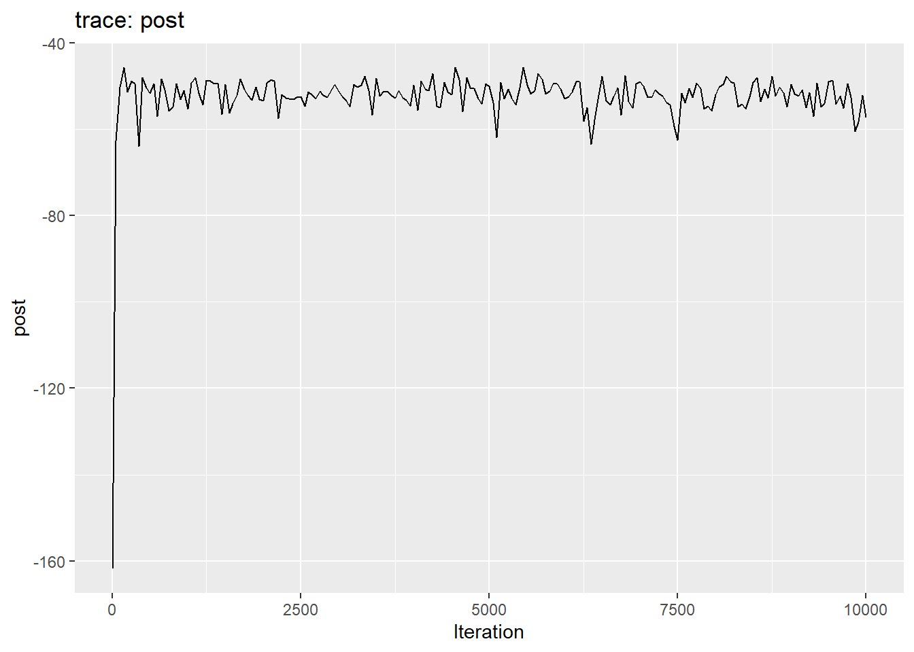
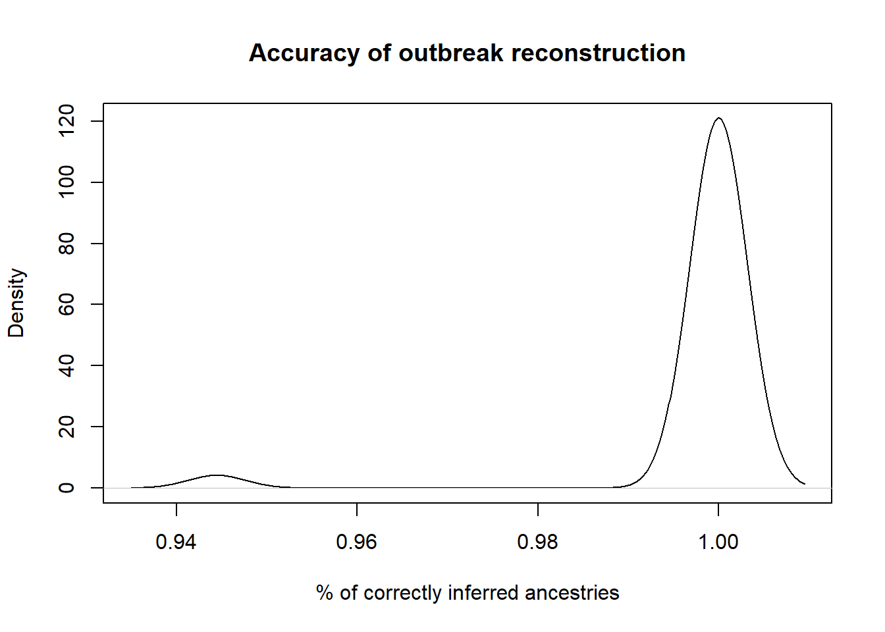
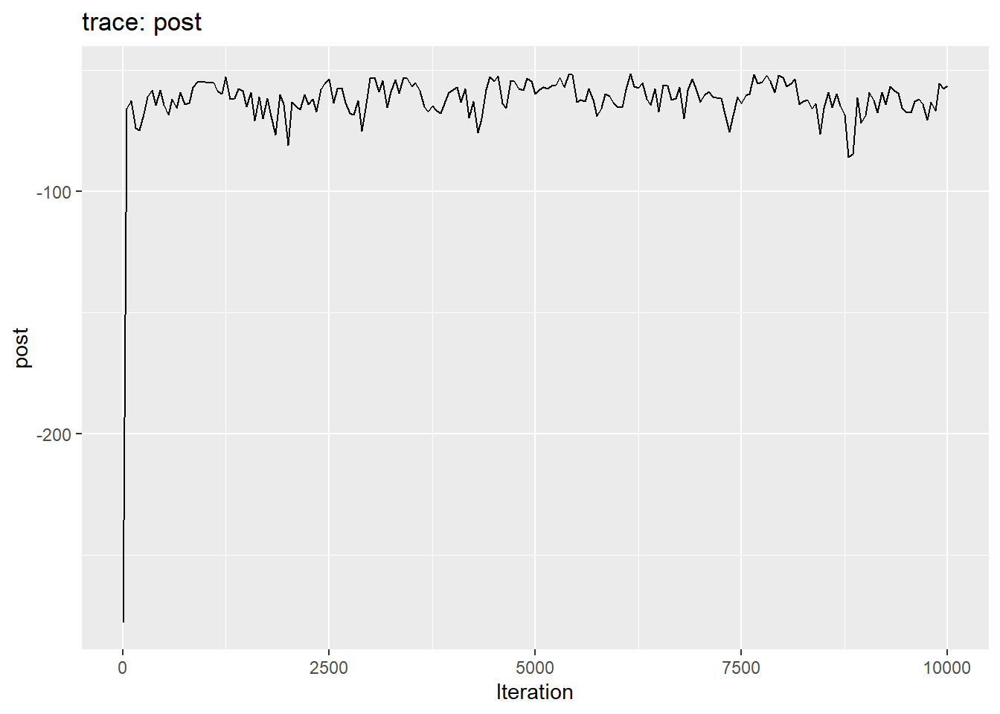

pacman::p_load(outbreaker2, ape, igraph, vegan, distcrete, ggplot2, scales)
pacman::p_load_gh("CyGei/o2ools")
devtools::load_all()Assess the performance of the test
Type I error (False Positive)
A Type I error, or false positive, occurs when the null hypothesis is rejected despite being true. In this context, it means concluding that two (or more) posterior chains differ when they are, in fact, identical.
We run outbreaker2 to produce a single posterior chain. We then create two (or more) bootstrapped samples by sampling with replacement from the same posterior chain and apply a statistical test to compare them. The test should yield a non-significant result (p-value > 0.05) to correctly suggest no difference.
x <- outbreaker(
data = outbreaker_data(
dna = fake_outbreak$dna,
dates = fake_outbreak$sample,
ctd = fake_outbreak$ctd,
w_dens = fake_outbreak$w,
ids = as.character(1:30)
),
config = create_config(
init_pi = 1,
move_pi = FALSE,
find_import = FALSE
)
)
x <- x[x$step > 1000, ] # burnin
chain <- o2ools::get_trees(out = x, ids = as.character(1:30))
#Function to remove the introduction in each tree of the chain (e.g. NA->1)
prep_chain <- function(chain) {
clean <- lapply(chain, function(x) {
total_nas <- sum(is.na(x))
from_nas <- sum(is.na(x$from))
if (total_nas == 1 && from_nas == 1) {
x <- x[!is.na(x$from), ]
x[] <- lapply(x, as.character)
return(x)
} else {
stop("DataFrame must have exactly one NA, and it must be in the 'from' column")
}
})
return(clean)
}
chain <- prep_chain(chain)
invisible(lapply(chain, check_tree)) # checks that the trees are in the right formatChi-square test
The chi-square test is performed 100 times, with new samples drawn for each iteration. Under the null hypothesis, we expect around 5% of the tests to yield a p-value < 0.05 due to random chance.
For example:
lambda <- 20
t <- replicate(1000, {
x <- rpois(n = 10, lambda)
y <- rpois(n = 10, lambda)
chisq.test(cbind(x, y))$p.value
})
mean(t < 0.05)[1] 0.057Note that when \(\lambda\) is small (e.g. when a cell in the contingency table has a value <5), Fisher’s exact test should be used instead. This is particularly relevant when comparing posterior chains, as it is possible for a pair, such as A->B, to appear a few times in one chain but never (0) in the other.
To assess the sensitivity of the test to sample size, we vary the number of trees sampled from the posterior distribution (chain) in each replication.
sample_sizes <- c(10, 50, 100, 500)
set.seed(111)
results <- lapply(sample_sizes, function(n) {
test <- replicate(100, {
get_chisq(
sample(chain, size = n, replace = TRUE),
sample(chain, size = n, replace = TRUE)
#test_args = list(simulate.p.value = TRUE, B = 1000)
)$p.value
})
return(mean(test < 0.05))
})
names(results) <- paste("Sample Size:", sample_sizes)
results$`Sample Size: 10`
[1] 0
$`Sample Size: 50`
[1] 0
$`Sample Size: 100`
[1] 0
$`Sample Size: 500`
[1] 0We don’t observe the expected 5% of false positives likely because the chi-square test is used with low frequencies. Fisher’s test is computationally intensive, so we won’t try it out here but you can specify method = "fisher".
PERMANOVA
This will take a while to run - so we use only 1 iteration…
sample_sizes <- c(10, 50, 100, 500)
results <- lapply(sample_sizes, function(n) {
test <- replicate(1, {
compare_chains(sample(chain, size = n, replace = TRUE),
sample(chain, size = n, replace = TRUE))$`Pr(>F)`[1]
})
})
names(results) <- paste("Sample Size:", sample_sizes)
results$`Sample Size: 10`
[1] 0.005
$`Sample Size: 50`
[1] 0.25
$`Sample Size: 100`
[1] 0.203
$`Sample Size: 500`
[1] 0.479Type II error (False Negative)
A Type II error, or false negative, occurs when the null hypothesis is accepted despite being false. In this context, it means concluding that two (or more) posterior chains are identical when they are, in fact, different.
To assess a Type II error, we require at least two distinct outbreak scenarios. For example, one scenario involving super-spreading (heterogeneous transmission) and another with no over-dispersion (homogeneous transmission) where all individuals have the same reproduction number \(R\)).
The package simulacr will help us simulate such outbreaks.
pacman::p_load_gh("CyGei/simulacr")Super-spreading outbreak
True transmission tree
We specify an offspring distribution using rnbinom(n = 100, size = 0.2, mu = 3), where the small dispersion parameter (\(k\) or size), indicates high overdispersion. This results in heterogeneous transmission, with substantial variation in the number of secondary cases generated by each infector.
set.seed(111)
sim_ss <-
simulacr::simulate_outbreak(
duration = 100,
population_size = 20,
R_values = rnbinom(n = 100, size = 0.2, mu = 3), #size is k (dispersion parameter)
dist_incubation = fake_outbreak$w,
dist_generation_time = fake_outbreak$w
)$data
epic_ss <- as_epicontacts(sim_ss)
plot(epic_ss)Outbreak reconstruction
Let’s use sim_ss’s data as input for outbreaker2. The resulting output we’ll use is called chain_ss.
out_ss <- outbreaker(
data = outbreaker_data(
dates = sim_ss$date_onset,
ctd = epic_ss$contacts[-1, ],
w_dens = fake_outbreak$w,
ids = as.character(epic_ss$linelist$id)
),
config = create_config(
init_pi = 1,
move_pi = FALSE,
find_import = FALSE
)
)
plot(out_ss)
out_ss <- out_ss[out_ss$step > 1000, ] # burnin
plot(out_ss, type = "network")chain <- get_trees(out = out_ss, ids = as.character(epic_ss$linelist$id))
chain_ss <- prep_chain(chain)
invisible(lapply(chain_ss, check_tree))Check that outbreaker2 did a good job by computing the proportion of correctly assigned ancestries.
o2ools::get_accuracy(chain_ss, epic_ss$contacts[-1, ]) %>%
density() %>%
plot(
main = "Accuracy of outbreak reconstruction",
xlab = "% of correctly inferred ancestries",
ylab = "Density"
)
“Uniform” outbreak
True transmission tree
Here we provide the same reproduction number \(R\) for everyone. For fair comparison, I ran a separate script to find a random seed that yields the same number of cases as out_ss and we’ll assign randomly the case IDs from out_ss to the below. The resulting output we’ll use is called chain_uni.
set.seed(3961)
sim_uni <-
simulacr::simulate_outbreak(
duration = 100,
population_size = 20,
R_values = 1L,
dist_incubation = fake_outbreak$w,
dist_generation_time = fake_outbreak$w
)$data
epic_uni <- as_epicontacts(sim_uni)
plot(epic_uni)@Thibaut R_values is not respected (some cases have R=2). Is this normal?
Outbreak reconstruction
Let’s use sim_uni’s data as input for outbreaker2.
out_uni <- outbreaker(
data = outbreaker_data(
dates = sim_uni$date_onset,
ctd = epic_uni$contacts[-1, ],
w_dens = fake_outbreak$w,
ids = as.character(epic_uni$linelist$id)
),
config = create_config(
init_pi = 1,
move_pi = FALSE,
find_import = FALSE
)
)
plot(out_uni)
out_uni <- out_uni[out_uni$step > 1000, ] # burnin
plot(out_uni, type = "network")# assign the IDs from sim_ss
common_ids <- sample(as.character(epic_ss$linelist$id))
chain <- get_trees(out = out_uni, ids = common_ids)
chain_uni <- prep_chain(chain)
invisible(lapply(chain_uni, check_tree))Comparing two distinct posterior chains
Chi-square test
sample_sizes <- c(10, 50, 100, 500)
set.seed(111)
results <- lapply(sample_sizes, function(n) {
test <- replicate(100, {
get_chisq(
sample(chain_ss, size = n, replace = TRUE),
sample(chain_uni, size = n, replace = TRUE)
#test_args = list(simulate.p.value = TRUE, B = 1000)
)$p.value
})
return(mean(test < 0.05))
})
names(results) <- paste("Sample Size:", sample_sizes)
results$`Sample Size: 10`
[1] 1
$`Sample Size: 50`
[1] 1
$`Sample Size: 100`
[1] 1
$`Sample Size: 500`
[1] 1PERMANOVA
sample_sizes <- c(10, 50, 100, 500)
system.time({
results <- lapply(sample_sizes, function(n) {
test <- replicate(1, {
compare_chains(
sample(chain_ss, size = n, replace = TRUE),
sample(chain_uni, size = n, replace = TRUE)
)$`Pr(>F)`[1]
})
})
names(results) <- paste("Sample Size:", sample_sizes)
}) user system elapsed
37.84 2.29 40.08 results$`Sample Size: 10`
[1] 0.001
$`Sample Size: 50`
[1] 0.001
$`Sample Size: 100`
[1] 0.001
$`Sample Size: 500`
[1] 0.001Sensitivity Analysis
We now want to perform a sensitivity analysis on two posterior chains of transmission trees (chain_A, chain_ss) to investigate how the sample size (sample_sizes) and the proportion of overlap between the two chains (overlap_freqs) affect the performance of the test (compare_chains). See run_analysis.R
source(here::here("analysis", "run_analysis.R"))
print(run_analysis)It first generates a grid of all possible combinations of
sample_sizesandoverlap_freqs.For each combination of parameters:
Two samples are created:
reference: A sample of sizenfromchainAonly.mixed: A sample of sizencombiningchainAandchainB. It draws fromchainAwith probabilityoverlap_freqand draws fromchainBwith probability 1-overlap_freq.
The test compares
referencewithmixedand returns a p-value.This step is repeated
n_repeatstimes.
The function returns a 3D array:
- The rows represent the iteration id (
n_repeat). - The columns represent the
sample_size. - The 3rd dimension represent the overlapping frequency between the two chains (
overlap_freq). - The entries refer to the corresponding p-values.
- The rows represent the iteration id (
result <- run_analysis(
chainA = chain_uni,
chainB = chain_ss,
sample_sizes = c(50, 200, 1000),
overlap_freqs = seq(0, 1, 0.1), #generate_sequence(0, 1, 0.1)
n_repeats = 1000
)We will be computing the following (note FPR = 1-sensitivity and FNR = 1-TPR) :
| Metric | Definition |
(chains are identical) |
(partial overlap) |
(chains are distinct) |
|---|---|---|---|---|
False Positive Rate (FPR) (type I error) |
Proportion of tests incorrectly rejecting the null hypothesis (detecting a difference when there is none). | Should be close to 5% (at α = 0.05) | Unclear | NA |
True Positive Rate (TPR) (sensitivity) |
Proportion of tests correctly rejecting the null hypothesis (detecting a difference when there is one). | NA | Unclear | Should be close to 100% |
True Negative Rate (TNR) (specificity) |
Proportion of tests correctly accepting the null hypothesis (detecting no difference when there is none). | Should be 95% | Unclear | NA |
False Negative Rate (FNR) (type II error) |
Proportion of tests incorrectly accepting the null hypothesis (detecting no difference when there is one). | NA | Unclear | Should be close to 0% |
| Accuracy | Proportion of correct results (true positives + true negatives). | Close to 95% | Unclear | Should be close to 100% |
| Optimal Sample Size / Power | Minimum n needed to achieve desired TPR |
ROC Curve
For each combination of
sample_sizeandoverlap_freq, calculate the TPR and FPR across then_repeatsiterations.Plot multiple ROC curves where:
Facet panel represent significance level
x-axis represents FPR
y-axis represents TPR
A curve refers to a given
overlap_freqPoints on the curve refer to
sample_sizes
The goal will be:
Compare test performance across different sample sizes
Evaluate how the discrimination ability changes with overlap_freq
Identify optimal significance level for balancing sensitivity and specificity